Fucoidantảo nâu Mozuku & miễn dịch
Bí quyết từ vùng biển Okinawa giúp người Nhật đánh thức tế bào miễn dịch tự nhiên, che chở niêm mạc dạ dày – đường ruột và hạn chế oxy hóa.
Mục lục
Bấm vào chương để đọc.
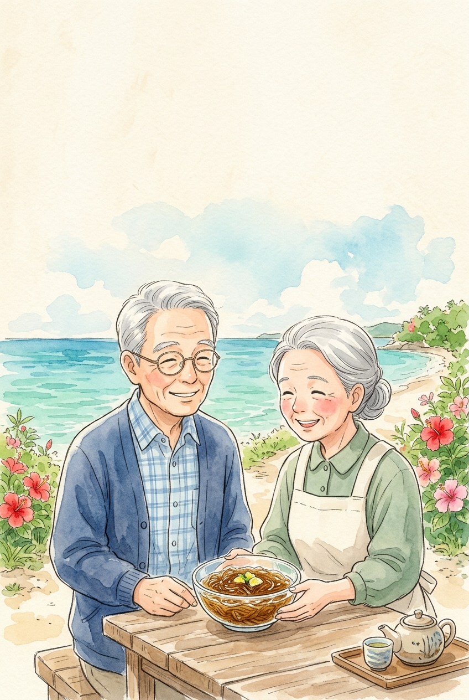
Tảo nâu quý
biển Okinawa
Kho báu Fucoidan từ đảo trường thọ
okinawa mozuku to fukoidan
Dưới làn nước biển ngọc bích đầy nắng ấm của quần đảo Okinawa, tảo nâu Mozuku tự phủ lên mình lớp màng nhầy kỳ diệu giàu Fucoidan bậc nhất.
Những con số từ đảo Okinawa
tảo nâu Mozuku của toàn nước Nhật được nuôi trồng tại vùng biển san hô Okinawa
tảo Mozuku Okinawa chứa nhiều Fucoidan gấp khoảng 5 lần tảo bẹ Kombu hay Wakame
công trình trên thư viện y khoa PubMed nghiên cứu hoạt tính sinh học của Fucoidan
tế bào miễn dịch của cơ thể nằm ở đường ruột — nơi Fucoidan tiếp xúc trực tiếp

Người Okinawa gọi bữa ăn có tảo biển là Kusuimun — nghĩa là “thức ăn chính là thuốc quý”!
Nguồn: Nghiên cứu Trăm tuổi Okinawa (Okinawa Centenarian Study) & Hiệp hội Thủy sản tỉnh Okinawa.
Bí quyết ít ốm vặt khi trái gió trở trời
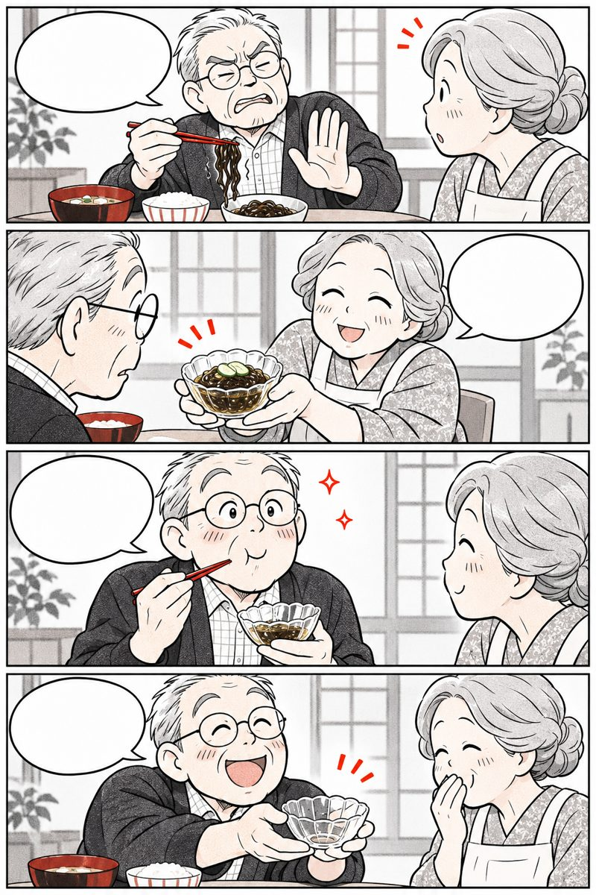
Giao mùa là người cứ uể oải… Thêm tảo Mozuku Okinawa nhé! Giàu Fucoidan gấp 5 lần tảo thường! Đề kháng khỏe, hết sợ trở trời!Sau tuổi 50, nuôi dưỡng sức đề kháng mỗi ngày giúp cơ thể vững vàng trước nắng mưa thất thường.
Vì sao tảo Mozuku tự tiết chất nhầy Fucoidan?
Tảo nâu Mozuku (Cladosiphon okamuranus) sống ở tầng nước biển nông trong vắt của Okinawa, đón ánh nắng mặt trời nhiệt đới suốt quanh năm:
 Biển san hô: giàu khoáng chất
Màng nhầy Fucoidan: tự bảo vệ tế bào
Biển san hô: giàu khoáng chất
Màng nhầy Fucoidan: tự bảo vệ tế bào
- Lá chắn tự nhiên dưới biển: lớp nhầy Fucoidan giúp sợi tảo chống lại tia cực tím (UV) gay gắt và tự làm lành nhanh chóng khi sóng biển va đập.
- Độ tinh khiết cao: khác với tảo bẹ Kombu chứa nhiều axit alginic đặc sánh, tảo Mozuku Okinawa cho phép tách chiết Fucoidan với độ tinh khiết vượt trội.
Nguồn: Nagaoka M. et al., Biological & Pharmaceutical Bulletin — Fucoidan from Okinawa Mozuku.
Rong biển nào cũng có nhiều Fucoidan?

Nhiều người nghĩ ăn lá kim cuốn cơm hay rong biển xanh là đã có Fucoidan. Cùng phân biệt rõ:
Lá kim (Nori) cuốn cơm có nhiều Fucoidan
Fucoidan chỉ có trong lớp nhầy của nhóm tảo nâu (Mozuku, Mekabu, Kombu)
Tảo bẹ dày hơn nên nhiều Fucoidan hơn
Tảo nâu sợi mảnh Mozuku Okinawa chứa hàm lượng Fucoidan cao gấp ~5 lần tảo bẹ
Khi nào ốm mới cần bồi bổ miễn dịch
Hệ miễn dịch tuổi 50+ cần được nuôi dưỡng nhẹ nhàng, đều đặn mỗi ngày
Ăn thật nhiều rong biển khô là đủ
Ăn quá nhiều rong biển thô dễ thừa muối và i-ốt; cần kết hợp vừa phải, đúng cách
Nguồn: Viện Nghiên cứu Khoa học Thủy sản Nhật Bản.
Tự rà 9 dấu hiệu đề kháng giảm

Bấm vào những câu đúng với bố mẹ hoặc chính mình trong 1–2 tháng qua:
Từ 2 dấu hiệu trở lên là lời nhắc nên chăm sóc niêm mạc đường ruột và bổ sung dưỡng chất hỗ trợ đề kháng.
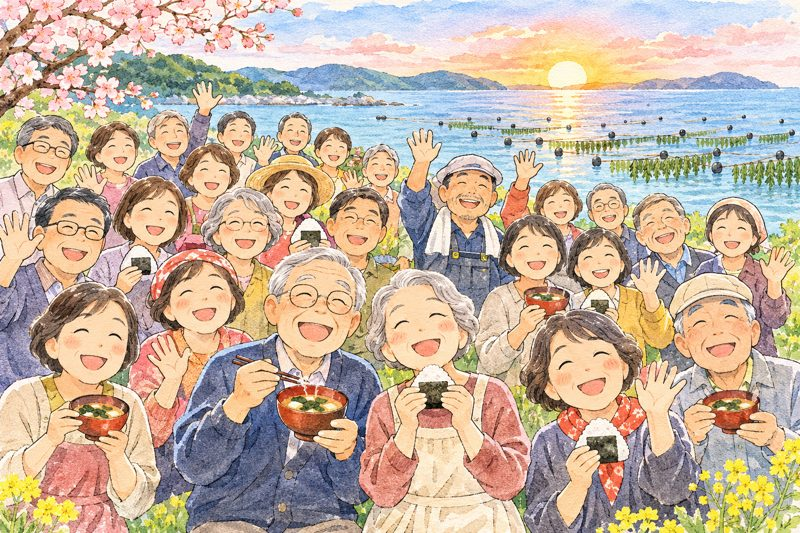
Đánh thức
đội vệ binh NK
Lá chắn miễn dịch tự nhiên tuổi 50+
shizen men'eki to NK saibō
Trong máu chúng ta có hàng tỷ tế bào sát thủ tự nhiên (NK) và đại thực bào đi tuần tra suốt ngày đêm — Fucoidan chính là tiếng trống đánh thức đội vệ binh ấy.
Vì sao tế bào miễn dịch NK cần được đánh thức?
Y học Nhật Bản chia hệ miễn dịch làm 2 tuyến: tuyến Miễn dịch tự nhiên (Tế bào NK, Đại thực bào) phản ứng ngay lập tức, và tuyến Kháng thể đặc hiệu. Sau tuổi 50, hoạt tính tế bào NK có thể giảm còn một nửa so với tuổi đôi mươi.
- Tập dượt
Chuỗi đường L-fucose gắn nhóm Sulfate (-SO₃⁻) của Fucoidan đóng vai trò như “bài diễn tập” nhẹ nhàng khi đi qua thành ruột non.
- Báo tin
Đại thực bào tại mảng Peyer ruột nhận tín hiệu từ Fucoidan và đánh thức tế bào NK (Natural Killer) trong máu luôn tỉnh táo.
- Che chắn
Tăng tiết kháng thể bề mặt IgA ở niêm mạc mũi họng và ruột, ngăn tác nhân lạ xâm nhập lúc giao mùa.

Nghiên cứu tại Nhật trên người cao tuổi cho thấy bổ sung Fucoidan từ tảo Mozuku giúp tăng đáp ứng kháng thể rõ rệt!
Nguồn: Negishi H. et al., Journal of Nutrition (2013) — Supplementation of Elderly Japanese with Fucoidan from Mozuku.
Đội tuần tra NK không còn ngủ gật
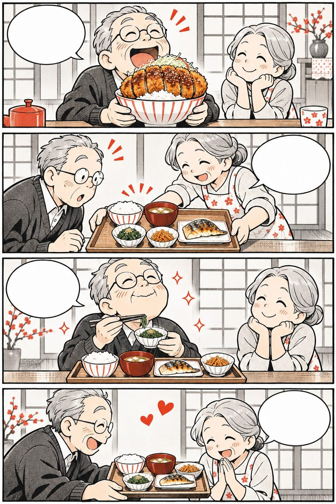
Tế bào NK trên đài nói là gì bà? Là đội vệ binh tuần tra trong máu đấy! Fucoidan và nụ cười giúp đánh thức NK! Mình vừa cười tươi vừa uống đều nhé!Tinh thần lạc quan cộng với dưỡng chất Fucoidan giúp tế bào miễn dịch tự nhiên hoạt động sung sức nhất.
Bí mật nằm ở “nhóm gốc Sulfate (-SO₃⁻)”
Không phải chất xơ nào cũng đánh thức được miễn dịch. Chìa khóa sinh học của Fucoidan nằm ở cấu trúc phân tử đặc biệt:
 Đường L-fucose + Gốc Sulfate: chìa khóa mở thụ thể
Tế bào NK & IgA: tăng sức đề kháng tự nhiên
Đường L-fucose + Gốc Sulfate: chìa khóa mở thụ thể
Tế bào NK & IgA: tăng sức đề kháng tự nhiên
- Giữ nguyên gốc Sulfate tự nhiên: Fucoidan chỉ phát huy tác dụng khi hàm lượng nhóm Sulfate đạt chuẩn (trên 13%) và không bị đứt gãy bởi hóa chất mạnh.
- Hiệp đồng cùng nấm và rau củ: kết hợp Fucoidan từ tảo nâu với Beta-glucan từ nấm hương, nấm đông cô giúp hệ miễn dịch càng thêm dẻo dai.
Nguồn: Maruyama H. et al., Planta Medica; Fitton J. H., Marine Drugs (2011).
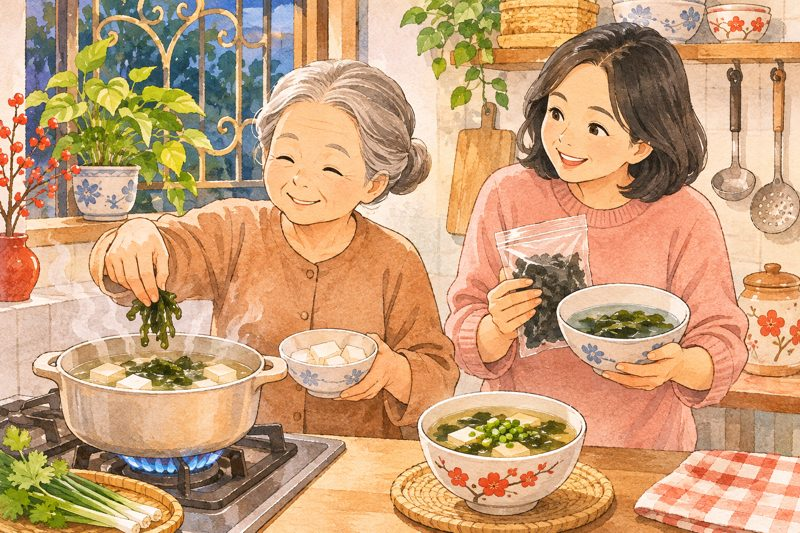
Cứ uống thật nhiều thuốc bổ một lúc là khỏe ngay?
Chăm sóc hệ miễn dịch tuổi 50+ cần sự điều hòa êm dịu, không phải kích thích đột ngột:
Làm yếu đề kháng
- Đợi khi ốm sốt mới vội vàng tìm đồ tẩm bổ
- Thức khuya quá 23h làm sụt giảm tế bào NK
- Căng thẳng, hay lo âu làm tăng hormone Cortisol
Nuôi dưỡng bền vững
- Bổ sung Fucoidan và ăn rau tảo đều đặn mỗi ngày
- Ngủ ấm bụng trước 23h để tủy xương tái tạo miễn dịch
- Đi bộ nắng sớm 20 phút và giữ nụ cười vui vẻ
4 món “Nebaneba” nuôi đề kháng trong bếp
Người Nhật rất quý các thực phẩm có độ nhớt tự nhiên (Nebaneba) vì giàu chất xơ hòa tan bảo vệ niêm mạc:
Tảo Mozuku, Wakame nấu canh đậu phụ hoặc trộn giấm thanh mát
Luộc vừa chín tới giữ trọn lớp nhầy Pectin và Mucin êm dịu ruột
Giàu đa đường Beta-glucan hiệp đồng cùng Fucoidan đánh thức đại thực bào
Natto, súp Miso hoặc sữa chua bổ sung hàng tỷ lợi khuẩn đường ruột
Làm ngay
- Cho rong biển vào lúc canh vừa sôi rồi tắt bếp ngay
- Nhai kỹ 20–30 lần để thức ăn hòa quyện enzyme nước bọt
Đừng làm
- Ninh rong biển quá nhừ trên lửa to làm mất dưỡng chất
- Uống nước đá lạnh ngay trong bữa ăn làm co mạch dạ dày
Nguồn: Hiệp hội Dinh dưỡng Nhật Bản (JDA).
Tính số bữa Tảo biển & Nấm trong tuần
Rong biển Wakame thông thường chứa ít Fucoidan hơn tảo nâu Mozuku Okinawa. Kết hợp bữa ăn thanh đạm với viên chiết xuất Mozuku giúp đạt liều chuẩn 1.100 mg/ngày.
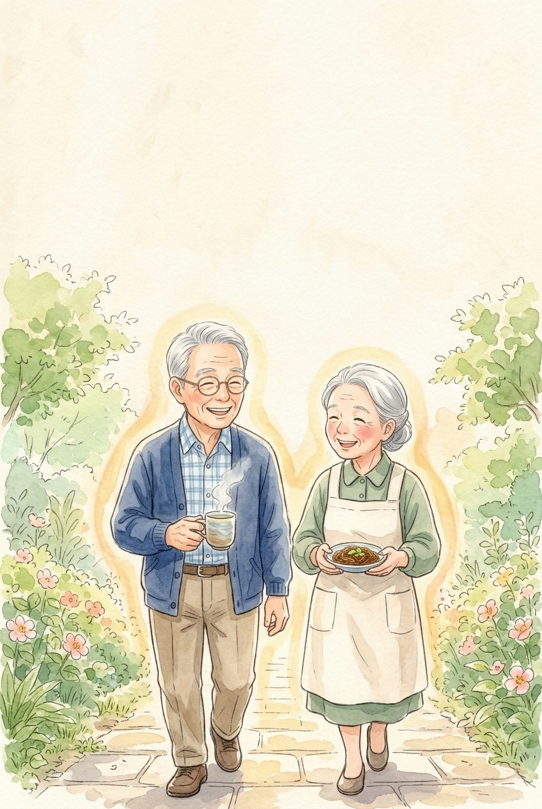
Dạ dày êm
đường ruột khỏe
Bảo vệ nơi đóng quân của 70% miễn dịch
ichō no nenmaku hogo
Người Nhật có câu “Ruột khỏe thì trăm năm không già” — bởi hơn 70% tế bào miễn dịch của cả cơ thể đóng quân ngay dọc niêm mạc đường tiêu hóa.
Vì sao đường ruột là “Gốc rễ của đề kháng”?
- Áo choàng niêm mạc dạ dày
Gốc Sulfate tích điện âm của Fucoidan gắn với protein bề mặt niêm mạc, tạo lớp màng ẩm mịn giảm xót ruột và cản trở hại khuẩn bám dính.
- Nuôi lợi khuẩn Bifidobacterium
Khi xuống đại tràng, Fucoidan trở thành nguồn thức ăn chọn lọc giúp lợi khuẩn sinh ra axit béo chuỗi ngắn (Butyrate) nuôi tế bào ruột.
- Giữ hàng rào ruột khăng khít
Kích thích tiết dịch nhầy Mucin tự nhiên, giúp ông bà tiêu hóa êm, đi ngoài đều đặn mỗi sáng.
Khi bụng dạ êm ái, cơ thể không chỉ hấp thu dinh dưỡng tốt hơn mà giấc ngủ đêm cũng sâu hơn hẳn!
Nguồn: Shibata H. et al., Journal of Nutritional Science and Vitaminology; Shang Q. et al., J. Functional Foods.
Ông Sato êm bụng, ăn cơm ngon miệng
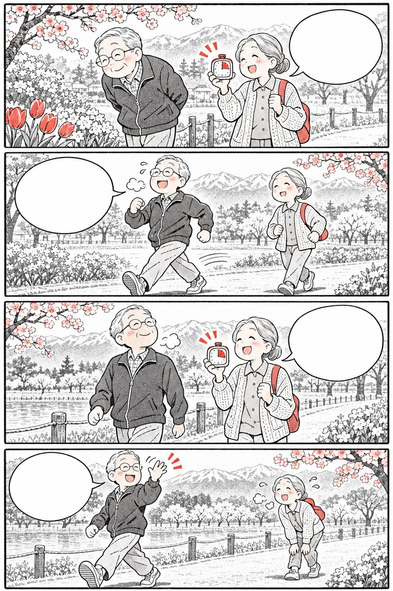
Ăn hơi chua là bụng cứ âm ỉ… Niêm mạc dạ dày mỏng đi đấy ông! Fucoidan phủ lớp nhầy êm dạ dày! Bụng nhẹ nhõm, ăn ngon miệng hẳn!Che chở lớp niêm mạc dạ dày và nuôi dưỡng lợi khuẩn là nền tảng của phương pháp dưỡng ruột Chōkatsu Nhật Bản.
Lớp màng xanh ngọc che chở niêm mạc
Qua tuổi 50, lượng dịch nhầy tự nhiên ở dạ dày và ruột giảm đi đáng kể. Fucoidan hỗ trợ phục hồi hàng rào này theo 3 cơ chế:
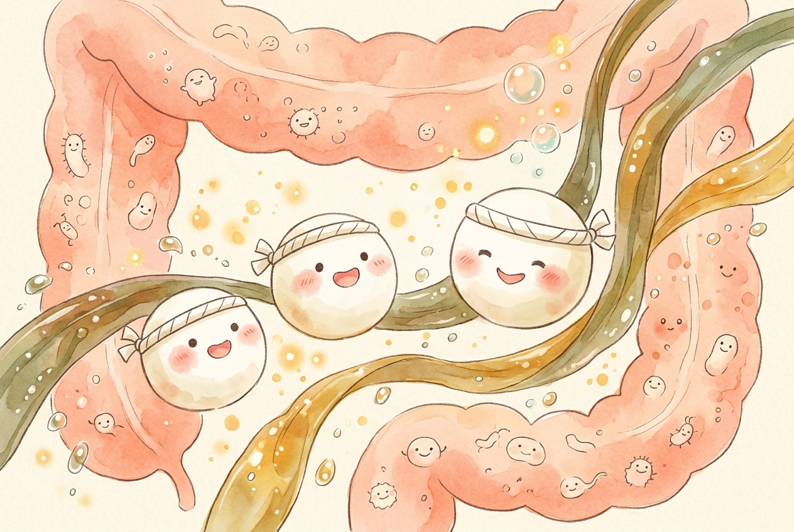
Màng nhầy Sulfate: che chở niêm mạc dạ dày Prebiotic biển: nuôi lợi khuẩn, tăng IgA- Không bị dịch vị phân hủy: chuỗi cao phân tử Fucoidan bền vững khi đi qua môi trường axit dạ dày, giữ nguyên vẹn hoạt tính cho tới ruột non và đại tràng.
- Uống cùng nước ấm (~40°C): nước ấm giúp hạt bột Fucoidan trương nở nhẹ nhàng thành lớp gel sinh học lan tỏa đều khắp bề mặt niêm mạc.
Nguồn: Hội Tiêu hóa Nhật Bản (JSGE) & Viện Nghiên cứu Sinh học Okinawa.
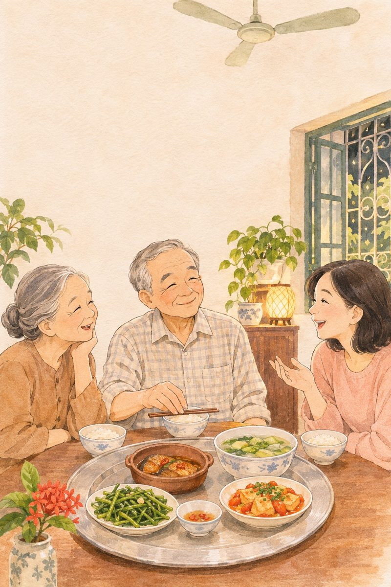
Chan canh vào cơm nuốt nhanh cho dễ tiêu?
Nhiều cô chú có thói quen chan canh ngập bát cơm rồi nuốt vội — nhưng đó lại là gánh nặng lớn cho dạ dày tuổi 50+:
Hại niêm mạc dạ dày
- Chan canh nuốt vội không kịp nhai kỹ
- Ăn tối quá muộn sát giờ đi ngủ
- Tự ý dùng thuốc giảm đau, kháng sinh khi chưa hỏi bác sĩ
Dưỡng dạ dày kiểu Nhật
- Ăn cơm riêng, húp canh riêng và nhai 20–30 lần
- Ăn tối nhẹ bụng trước giờ ngủ ít nhất 3 tiếng
- Uống 1 cốc nước ấm buổi sáng và bổ sung Fucoidan đều đặn
Nhịp chăm sóc “Ruột êm – Đề kháng khỏe”
Chia khẩu phần 5 viên Fucoidan (1.100 mg) làm 2 lần trong ngày cùng nước ấm giúp niêm mạc và tế bào miễn dịch được nuôi dưỡng liên tục:
Buổi sáng
- Thức dậy uống 1 cốc nước ấm đánh thức nhu động ruột
- Uống 2–3 viên Fucoidan cùng nước ấm (trước hoặc sau ăn sáng 30 phút)
- Đi bộ nhẹ 15–20 phút dưới nắng sớm
Buổi chiều tối
- Uống 2–3 viên Fucoidan còn lại với nước ấm (đủ 5 viên/ngày)
- Ăn tối có canh rau/tảo ấm, nhai chậm rãi
- Xoa ấm bụng theo chiều kim đồng hồ 20 vòng trước khi ngủ

Người có dạ dày nhạy cảm nên uống Fucoidan sau bữa ăn 20–30 phút với nước ấm để êm bụng nhất!
Nguồn: Hướng dẫn chăm sóc đường ruột (Chōkatsu · 腸活) Nhật Bản.
Sổ theo dõi Miễn dịch 7 ngày liền
Ghi tổng số viên Fucoidan và số cốc nước ấm đã uống mỗi ngày (VD: 5 viên · 6 cốc nước ấm).
Vì sao Fucoidan rất cần nước ấm đi kèm?
Uống đủ 6–8 cốc nước ấm mỗi ngày giúp chuỗi đa đường Fucoidan hòa tan êm ái, che chở niêm mạc tiêu hóa và hỗ trợ tuần hoàn bạch huyết.
Số liệu chỉ lưu riêng tư ngay trong điện thoại hoặc máy tính của bạn.

Tảo nâu Mozuku
báu vật Okinawa
Vì sao Mozuku giàu Fucoidan bậc nhất?
Okinawa mozuku no chikara
Hơn 90% sản lượng tảo nâu Mozuku của toàn nước Nhật được nuôi dưỡng dưới làn nước ngọc bích đầy nắng ấm của quần đảo Okinawa.
Hàm lượng Fucoidan gấp 5 lần tảo bẹ Kombu
Tảo nâu Okinawa Mozuku (Cladosiphon okamuranus) phát triển nhờ hấp thu khoáng chất từ rặng san hô và ánh nắng cận nhiệt đới dồi dào, tạo nên lớp chất nhờn Fucoidan cực kỳ phong phú.
là hàm lượng Fucoidan có trong tảo nâu Mozuku Okinawa so với tảo bẹ Kombu hay Mekabu thông thường, đồng thời chứa rất ít i-ốt dư thừa và dễ chiết xuất tinh khiết.

Chọn chiết xuất từ 100% tảo nâu Mozuku vùng biển Okinawa là bí quyết để nhận được nguồn Fucoidan tinh khiết, chuẩn Nhật!
Nguồn: Nagaoka M. et al., Biological & Pharmaceutical Bulletin — Cấu trúc Okinawa Mozuku Fucoidan.
Khó ăn tảo tươi mỗi ngày? Đã có viên chiết xuất tinh khiết!
 Ở mình làm sao mua được tảo tươi Okinawa mỗi ngày?
Ăn 1 kg tảo tươi mới được 1 gam Fucoidan cơ!
Nhờ viên chiết xuất Mozuku tinh khiết, ngày 5 viên là đủ!
Gọn nhẹ, chuẩn hàm lượng mà êm bụng biết bao!
Ở mình làm sao mua được tảo tươi Okinawa mỗi ngày?
Ăn 1 kg tảo tươi mới được 1 gam Fucoidan cơ!
Nhờ viên chiết xuất Mozuku tinh khiết, ngày 5 viên là đủ!
Gọn nhẹ, chuẩn hàm lượng mà êm bụng biết bao!
Công nghệ chiết xuất chuẩn Nhật giúp cô đọng dưỡng chất từ 1 kg tảo tươi vào vài viên nhỏ gọn mỗi ngày.
Từ 1 kg tảo tươi đến 1 gam Fucoidan tinh khiết
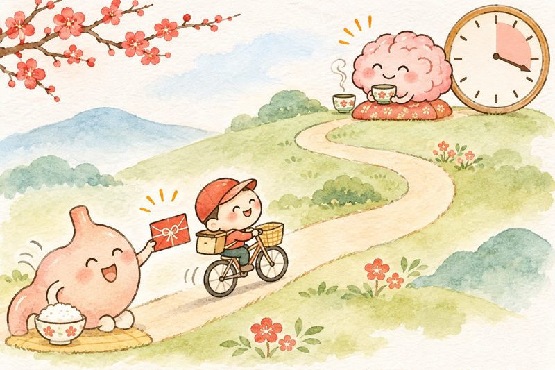
Để có được 1 gam (1.000 mg) Fucoidan nguyên chất, cần thu hoạch và chiết xuất từ khoảng 1 kg tảo nâu Mozuku tươi vùng biển Okinawa.
Quy trình tách chiết hiện đại giúp giữ trọn nhóm Sulfate quý giá của Fucoidan mà loại bỏ muối mặn và tạp chất không cần thiết.
Mỗi viên nang chứa 220 mg chiết xuất Mozuku Fucoidan; uống 5 viên/ngày cung cấp 1.100 mg tương đương 1 kg tảo tươi.
Nguồn: Hiệp hội Nghiên cứu Fucoidan Nhật Bản (NPO Fucoidan Research Lab).
Ăn rong biển khô thông thường có thay được Mozuku Fucoidan?
Rong biển nấu canh rất tốt cho bữa cơm, nhưng khác biệt lớn với chiết xuất Mozuku Fucoidan:
Chỉ ăn nhiều rong biển khô
- Rong biển Nori/Wakame chứa rất ít Fucoidan so với Mozuku
- Ăn quá nhiều rong biển nguyên xác dễ nạp thừa muối và i-ốt
- Khó ăn đều đặn hàng trăm gam mỗi ngày
Chiết xuất Mozuku Okinawa
- Cô đặc từ tảo nâu Mozuku giàu Fucoidan gấp 5 lần
- Đã tách bỏ muối mặn dư thừa, nhẹ nhàng cho huyết áp
- Dễ dàng duy trì đúng 1.100 mg (5 viên) mỗi ngày
Chăm sóc đề kháng đều đặn 7 ngày
Thử 7 ngày liền
Uống đủ Fucoidan & nước ấm, đóng dấu
Chống oxy hóa
tế bào trẻ lâu
Bảo vệ cơ thể trước gốc tự do mỗi ngày
kōsanka to kenkō
Mỗi ngày cơ thể phải đối mặt với hàng tỷ gốc tự do từ khói bụi, căng thẳng và tuổi tác — Fucoidan cùng rau quả tươi chính là tấm khiên dọn dẹp êm ái.
Khiên chắn gốc tự do & nâng đỡ thể trạng
Ở Nhật Bản, Fucoidan không chỉ dùng cho người muốn phòng cảm vặt lúc giao mùa mà còn được tin dùng để hỗ trợ nâng đỡ thể trạng, giảm mệt mỏi cho người lớn tuổi hoặc người đang cần phục hồi sức khỏe.
chiết xuất Okinawa Mozuku Fucoidan mỗi ngày (tương đương 5 viên × 220 mg) giúp trung hòa các gốc tự do (ROS), bảo vệ màng tế bào lành và hỗ trợ cơ thể ăn ngon, ngủ sâu hơn.
Kết hợp Fucoidan + rau củ đa sắc màu + uống đủ nước ấm giúp tế bào luôn tươi mới, bền bỉ!
Nguồn: Wang J. et al., International Journal of Biological Macromolecules — Hoạt tính chống oxy hóa của Fucoidan.
Chăm sóc sức đề kháng là hành trình mưa dầm thấm lâu
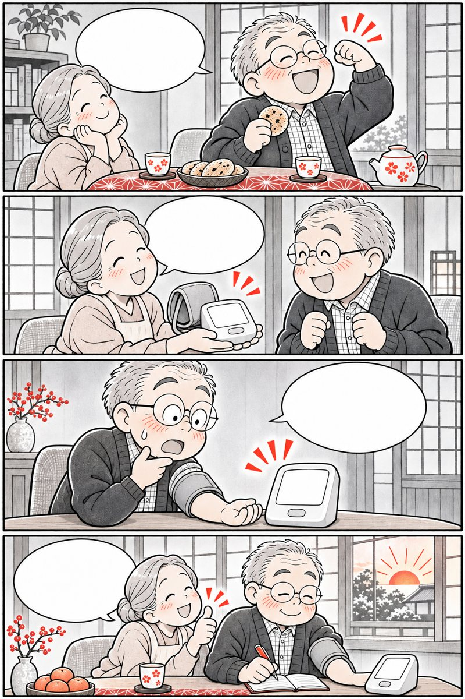
Đừng đợi lúc ốm mệt mới vội vàng tìm thuốc bổ! Mỗi ngày bồi đắp đề kháng một chút như chăm cây! Uống với nước ấm trước ăn 30 phút hoặc sau ăn! Đi khám định kỳ nhớ mang theo lọ cho bác sĩ xem nhé!Sức đề kháng vững vàng được xây từ những thói quen nhỏ lặp lại đều đặn mỗi ngày.
3 nguyên tắc uống Fucoidan an toàn, hiệu quả

Nước ấm giúp chất xơ hòa tan Fucoidan trương nở nhẹ nhàng, phát huy tối đa tác dụng bao phủ niêm mạc và tiếp cận tế bào miễn dịch ruột.
Có thể uống trước bữa ăn 30 phút để bảo vệ niêm mạc, hoặc uống sau bữa ăn 20–30 phút nếu dạ dày nhạy cảm.
Vì Fucoidan là chất xơ đa đường tự nhiên, nên uống cách thuốc kê đơn của bác sĩ 1–2 tiếng để không ảnh hưởng tốc độ hấp thu thuốc.
Nguồn: Hướng dẫn sử dụng thực phẩm bảo vệ sức khỏe Nhật Bản.
Uống dồn lúc mệt hay uống đều mỗi ngày tốt hơn?
Tế bào miễn dịch ở ruột cần được “tập huấn” nhẹ nhàng và liên tục mỗi ngày:
Uống dồn, ngắt quãng
- Lúc khỏe bỏ quên cả tháng, lúc mệt uống quá liều
- Ruột đột ngột nhận nhiều chất xơ dễ đầy bụng, lỏng phân
- Tế bào miễn dịch không được duy trì trạng thái sẵn sàng
Đều đặn chuẩn Nhật
- Duy trì 3–5 viên mỗi ngày liên tục qua các mùa
- Chia 2 lần sáng – chiều cùng cốc nước ấm êm bụng
- Thông báo cho bác sĩ nếu đang điều trị bệnh lý nền
Tính lượng Fucoidan & Tảo tươi tương đương
Thử 7 ngày liền
Uống đúng cách, đóng dấu
Bụng ấm, thân nhiệt ấm
tâm an, đề kháng bền
Nghệ thuật dưỡng miễn dịch Onkatsu (温活)
onkatsu to egao
Người Nhật có câu: “Hạ thân nhiệt 1°C làm giảm 30% sức mạnh miễn dịch; giữ ấm cơ thể và mỉm cười mỗi ngày chính là liều thuốc quý nhất”.
Onkatsu (温活) — Giữ ấm bụng để tế bào NK sung sức
Các bác sĩ miễn dịch học Nhật Bản phát hiện ra rằng tế bào NK và đại thực bào hoạt động mạnh mẽ nhất khi thân nhiệt đạt 36,5°C – 37,0°C và vùng bụng luôn ấm áp.
hoạt tính của tế bào miễn dịch tự nhiên (NK cell) khi cơ thể được giữ ấm (uống nước ấm, ngâm chân nước ấm, xoa bụng) kết hợp tiếng cười vui vẻ và giấc ngủ sâu.
Tảo Mozuku Fucoidan + Giữ ấm vùng bụng + Ngủ sâu + Nụ cười là 4 trụ cột miễn dịch vàng của người Okinawa!
Nguồn: Ishihara Y., Onkatsu (温活) & Takahashi K., Nghiên cứu tiếng cười và hoạt tính tế bào NK Nhật Bản.
Giữ bụng ấm, cười thật tươi, khỏe mạnh suốt bốn mùa
 Sáng uống nước ấm, ăn canh tảo, bụng êm ru!
Tối xoa ấm bụng 30 giây, ngủ một mạch tới sáng!
Cuối tuần con cháu sum vầy, tiếng cười vang khắp nhà!
Chúc cả nhà mình đề kháng vững vàng suốt bốn mùa!
Sáng uống nước ấm, ăn canh tảo, bụng êm ru!
Tối xoa ấm bụng 30 giây, ngủ một mạch tới sáng!
Cuối tuần con cháu sum vầy, tiếng cười vang khắp nhà!
Chúc cả nhà mình đề kháng vững vàng suốt bốn mùa!
Một cơ thể ấm áp và một tâm hồn vui vẻ là nơi hệ miễn dịch tỏa sáng nhất.
4 trụ cột bảo vệ sức đề kháng tuổi 50+

Nuôi dưỡng lợi khuẩn và đánh thức 70% tế bào miễn dịch đóng quân tại niêm mạc ruột non mỗi ngày.
Hạn chế nước đá lạnh, uống nước ấm 40°C và xoa ấm quanh rốn giúp máu giàu tế bào miễn dịch lưu thông khắp cơ thể.
Ban đêm là lúc cơ thể sản sinh tế bào miễn dịch mới; tiếng cười giúp giảm hormone căng thẳng Cortisol tức thì.
Nguồn: Trung tâm Nghiên cứu Trường thọ Okinawa (Okinawa Centenarian Study).
Thu mình trong phòng kín hay vận động ấm áp ngoài trời?
Tế bào miễn dịch cần ánh nắng sớm và sự lưu thông khí huyết để tuần tra khắp cơ thể:
Làm suy giảm đề kháng
- Uống nước đá lạnh ngay cả khi trời mát hoặc buổi sáng
- Nằm lì trong phòng kín thiếu ánh nắng và không khí tươi
- Lo âu, mất ngủ kéo dài làm tăng Cortisol ức chế miễn dịch
Tăng đề kháng kiểu Nhật
- Giữ ấm cổ, bụng và bàn chân; luôn uống nước ấm
- Đi bộ nhẹ dưới nắng sớm 20 phút để tổng hợp Vitamin D
- Xoa ấm bụng 30 giây và thở sâu mỉm cười trước khi ngủ
30 giây xoa ấm bụng (Onkatsu) đánh thức miễn dịch
Xoa ấm vùng rốn 30 giây mỗi tối kết hợp uống nước ấm giúp tăng lưu lượng máu nuôi hệ miễn dịch đường ruột (GALT).